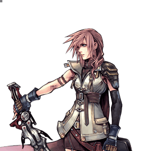

Final Fantasy XIII
Lightning
Polyvalente à trois rôles, pression Thunder et économie d'EX redoutable
Position dans la méta
Tier A+ 4ᵉ sur 30 — tier list tournoi 2017 de dissidia.wiki (moitié valeurs de matchups, moitié avis de joueurs experts).
Lightning est classée 4e, en tier A+, sur la tier list compétitive de 2017 — première derrière le trio S. L'overview attribue ce niveau non pas à un outil unique mais à un kit très complet qui couvre la plupart des fondamentaux du jeu.
Vue d'ensemble
Protagoniste de Final Fantasy XIII, Lightning s'appuie sur son Paradigm Shift pour s'adapter à toutes les situations : Commando pour le combat au close/mid range, Ravager pour le zoning, le poke et le rushdown (Thunder), et Medic pour générer de la bravery. Elle possède quelques outils qui sortent du lot, mais son vrai potentiel tient à son kit très complet, capable de couvrir énormément d'aspects fondamentaux du jeu.
Son gameplay est simple et polyvalent : bons pokes, bons outils de zoning, bon rushdown et mixups sur dodge/block — de quoi répondre à la plupart des options et matchups courants. Son zoning est agressif : elle tient à distance, envoie des projectiles aux trousses de l'adversaire et punit les setups depuis la mi-distance, ce qui complique le démarrage de l'offense adverse tout en lançant la sienne. Beaucoup de ses coups ont un hit stun élevé, mènent au Chase ou provoquent un Wall Rush, ce qui lui permet de confirmer la plupart des touches en assist, parfois en HP, et de sortir des combos impressionnants de longueur.
Son économie de meter est un moteur central : ses confirms courants, combos d'assist et combos avancés génèrent une EX Force conséquente, sa dash speed et son zoning gagnent fréquemment les courses aux EX Cores, et Thunder (entre autres) dope son gain de jauge d'assist. Lightning est l'un des rares personnages capables de remplir la jauge EX deux fois dans un (long) match, et l'une des meilleures utilisatrices de la jauge : bons combos en EX Revenge, bon EX Mode, et Omega Weapon en kill confirm sur Bravery Break.
En contrepartie, ses dégâts restent faibles même sur ses combos les plus optimisés, Glutton couplé à une portée d'absorption d'EX boostée peut siphonner une grande partie de son EX si elle n'investit pas elle-même en EX intake range, et Watera — pourtant excellent — peut ruiner ses propres combos s'il est reflété ou négligé.
Forces
- Gameplay simple et polyvalent : bons pokes, bon zoning, bon rushdown et mixups sur dodge/block, de quoi couvrir la plupart des options et matchups courants.
- Économie de meter puissante : confirms, combos d'assist et combos avancés génèrent beaucoup d'EX Force ; dash speed et zoning gagnent souvent les courses aux EX Cores ; Thunder dope aussi le gain de jauge d'assist. Peut remplir la jauge EX deux fois dans un long match.
- Zoning agressif : de nombreux outils pour tenir à distance, poursuivre avec des projectiles ou punir les setups depuis la mi-distance.
- Gros potentiel de combo : hit stun élevé, Chase et Wall Rush sur beaucoup de coups, d'où des confirms en assist (parfois en HP) et de très longs combos sur la bonne touche.
- Excellente utilisation de l'EX : bons combos en EX Revenge, bon EX Mode, et Omega Weapon en kill confirm de Bravery Break.
Faiblesses
- Dégâts faibles : même avec ses combos les plus optimaux, elle peine à sortir de gros chiffres de manière constante.
- Vulnérable à Glutton : couplé à une portée d'absorption d'EX boostée, il peut lui retirer une grande partie de son EX si elle n'investit pas elle-même en EX intake range.
- Watera à double tranchant : reflété ou négligé, il peut fréquemment ruiner ses propres combos.
Stats & vitesses
| Nom | Lightning (ライトニング) |
|---|---|
| Jeu d'origine | Final Fantasy XIII |
| ATK de base (LV100) | 109 (Low / +1 in Commando, Average) |
| DEF de base (LV100) | 111 (Average) |
| Vitesse de course | 6 (Average / Good) |
| Vitesse de dash | 73 (Fast) |
| Vitesse de chute | 75 (Above Average) |
| Chute après esquive | 28 (Above Average) |
| BRV la plus rapide | 13F (Thunder) |
| HP la plus rapide | 47F (Lightning Strike, Crushing Blow) |
| HP en 1 coup | Yes (Crushing Blow, Razor Gale) |
| HP links | Yes |
| Command block | No |
| Armes | Swords, Daggers, Greatswords, Katanas, Guns, Parrying Weapons |
| Armures | Shields, Bangles, Gauntlets, Hats, Helms, Headbands, Ribbons, Clothing, Light Armor, Chestplates |
| Armes exclusives | Blazefire Saber, Axis Blade, Flamberge, Enkindler, Omega Weapon, Barrage Blade, Zantetsuken, Odin Blade |
| Unlock | Default |
| Camp | Cosmos |
| Doubleur (JP) | Maaya Sakamoto |
| Doubleur (ENG) | Ali Hillis |
Point or : ce personnage · petits points : le reste du cast · trait violet : moyenne. Valeurs du wiki, plus bas = plus rapide ; le rang à droite se lit directement (1ᵉʳ = le plus rapide).
Coups
Barre plus courte = coup plus rapide. Startup en frames (60 i/s, données dissidia.wiki), priorité indiquée après la valeur. Les coups marqués ★ sont les plus rapides du kit — ce sont en général vos meilleurs outils de punish et de pression.
Braveries
Commando — au sol
Blitz Melee Mid
Slash tournoyant très actif, immense et avançant loin, qui grâce à ses frames actives et sa priorité Melee Mid passe au travers d'attaques comme le Thunder Barret de Squall, et se convertit en assist depuis le premier hit comme depuis le Wall Rush. Un guard break se convertit avec assist (ou sur break très tardif), mais le tir de Wall Rush ne sort alors pas et il faut dodge cancel. Recovery assez longue mais souvent difficile à punir : à utiliser avec prudence.
| Dégâts de base | 2 x 7, 4, 17 (35) |
|---|---|
| Startup | 29F |
| Type | Physical |
| Priorité | Melee Mid |
| EX Force | 30 |
| Effets | Wall Rush |
| CP (maîtrisé) | 20 (10) |
Launch Melee Low
Deux coups homonymes selon le rôle et la position. Au sol (Launch, 23F) : son coup au sol le plus rapide, réactable mais doté d'un bon tracking et d'une bonne portée pour un whiff punish rapide ou punir les esquives arrière/latérales — surtout utilisé après un combo d'assist pour enchaîner sur Flourish of Steel, son ender HP le plus dommageable en bravery. En l'air (Blaze Rush, 29F) : tir + charge à l'épée efficace à toute hauteur, dont la première partie ouvre un combo solo (Blaze Rush > dodge cancel > landing lag > Smite).
| Dégâts de base | 12, 10, 18 (40) |
|---|---|
| Startup | 23F |
| Type | Physical |
| Priorité | Melee Low |
| EX Force | 30 |
| Effets | Wall Rush |
| CP (maîtrisé) | 20 (10) |
Ruinga Ranged Low (orb), Ranged Mid (explosion)
Orbe à longue portée au tracking vertical limité, Wall Rush sur hit. La version un peu plus utile de Ruin : whiff punish longue distance converti en assist, une option à considérer de temps en temps même si l'occasion est rare.
| Dégâts de base | 10, 15 (25) |
|---|---|
| Startup | 37F |
| Type | Magical |
| Priorité | Ranged Low (orb), Ranged Mid (explosion) |
| EX Force | 30 |
| Effets | Wall Rush |
| CP (maîtrisé) | 20 (10) |
Commando — en l’air
Smite Melee Low
Slash à 23F qui envoie l'adversaire vers le bas, Wall Rush. Ender de combos solo via le landing lag de Blaze Rush et follow-up possible de Watera.
| Dégâts de base | 12, 10, 18 (40) |
|---|---|
| Startup | 23F |
| Type | Physical |
| Priorité | Melee Low |
| EX Force | 30 |
| Effets | Wall Rush |
| CP (maîtrisé) | 20 (10) |
Ruin Ranged Low
Projectile longue portée utilisable jusqu'à trois fois, tous les hits menant au Chase, orientable au stick. Souvent surclassé en utilité par Blizzara/Watera, mais plus rapide que Blizzara pour un rare whiff punish à longue distance.
| Dégâts de base | each (10) |
|---|---|
| Startup | 33F |
| Type | Magical |
| Priorité | Ranged Low |
| EX Force | 0 |
| Effets | Chase |
| CP (maîtrisé) | 20 (10) |
Blaze Rush Ranged Low
Deux coups homonymes selon le rôle et la position. Au sol (Launch, 23F) : son coup au sol le plus rapide, réactable mais doté d'un bon tracking et d'une bonne portée pour un whiff punish rapide ou punir les esquives arrière/latérales — surtout utilisé après un combo d'assist pour enchaîner sur Flourish of Steel, son ender HP le plus dommageable en bravery. En l'air (Blaze Rush, 29F) : tir + charge à l'épée efficace à toute hauteur, dont la première partie ouvre un combo solo (Blaze Rush > dodge cancel > landing lag > Smite).
| Dégâts de base | 7 x 3, 14 (35) |
|---|---|
| Startup | 29F |
| Type | Physical |
| Priorité | Ranged Low |
| EX Force | 30 |
| Effets | Wall Rush |
| CP (maîtrisé) | 20 (10) |
Ravager — au sol
Fire Ranged Low
Jusqu'à trois petits projectiles posés devant elle qui partent ensuite vers l'adversaire à bonne vitesse, avec un hit stun très généreux qui rend le follow-up facile. Combiné à Thundaga et/ou Watera, il stoppe les approches et met l'adversaire sur la défensive. Pilier de combos au sol avancés — après un Wall Rush au sol avec Aerith, ou derrière l'assist Jecht qui laisse le temps de le poser — avec Fire > Launch en belle extension quand elle est disponible.
| Dégâts de base | each 4 (up to 12) |
|---|---|
| Startup | 25F, 11F, 11F |
| Type | Magical |
| Priorité | Ranged Low |
| EX Force | 0 |
| CP (maîtrisé) | 20 (10) |
Aerora Ranged Low
Petit projectile au tracking vertical lent, faible en neutral. Son intérêt : il peut hit glitch vers Lightning Strike, même si ce combo est plus dur à placer que les combos en link glitch plus pratiques.
| Dégâts de base | 1 x 5, 6 (11) |
|---|---|
| Startup | 43F |
| Type | Magical |
| Priorité | Ranged Low |
| EX Force | 0 |
| CP (maîtrisé) | 20 (10) |
Thundaga Ranged Low
Deux sorts homonymes selon la position. Au sol (Thundaga, 27F) : éclairs Ranged Low dans une petite zone autour d'elle, si fréquents et persistants (même si elle est touchée) que la plupart des personnages ne peuvent pas la punir dedans — le temps de générer de la bravery en Medic, de recaster ou de bâtir la jauge d'assist ; le hit stun permet un assist pendant le chase, mais le confirm est difficile, le prompt sortant dès qu'un éclair touche. En l'air (Thunder, 13F) : le coup qui définit le personnage — portée trompeuse, anti-air, spammable grâce à une recovery minuscule qui permet de le cancel en état neutre et de le répéter en rythme pour bâtir la jauge d'assist ; même bloqué, beaucoup de personnages peinent à riposter, donc bloquer ne garantit pas son tour. Sa priorité Ranged Low le laisse toutefois perméable aux attaques melee, aux dashes et aux magic blocks (Heel Crush de Squall) ; dégâts faibles, mais 90 EX Force par cast complet et contournement possible de l'Assist Change LV2 autour du troisième hit.
| Dégâts de base | each (10) |
|---|---|
| Startup | 27F |
| Type | Magical |
| Priorité | Ranged Low |
| EX Force | each 21 |
| Effets | Chase |
| CP (maîtrisé) | 20 (10) |
Army of One (ground) Melee Mid
Ruée traqueuse menant au Chase sur hit, à la portée bien plus longue qu'attendu et au dodge punish fiable de près ; bon mixup pour punir block et esquive malgré une animation un peu lente. Sur hit, génération d'EX énorme (120, davantage avec le Chase), mais la version au sol sert moins, d'autres coups couvrant les mêmes situations.
| Dégâts de base | 3 x 6, 12 (30) |
|---|---|
| Startup | 43F |
| Type | Physical |
| Priorité | Melee Mid |
| EX Force | 120 |
| Effets | Chase |
| CP (maîtrisé) | 20 (10) |
Ravager — en l’air
Watera Ranged Mid
Projectile staple : très lent mais très persistant, idéal pour occuper l'espace, et qui doit être reflété pour être désarmé — les personnages sans coup mid/high rapide et sûr ont peu de réponses, et s'il est bloqué, Lightning punit le stagger en HP ou relance un Watera en refletant l'autre avec Army of One. Il reste actif même si elle est touchée (interception des combos et assists basse priorité à proximité), génère beaucoup d'EX (90) et offre un hit stun ample pour les combos solo (près/au-dessus de l'adversaire ou en avançant) comme d'assist. Certains assists peuvent le whiff punir de façon constante, mais le timing est délicat : l'assist doit attaquer après le lancement de la boule.
| Dégâts de base | 15 |
|---|---|
| Startup | 43F |
| Type | Magical |
| Priorité | Ranged Mid |
| EX Force | 90 |
| CP (maîtrisé) | 20 (10) |
Thunder Ranged Low
Deux sorts homonymes selon la position. Au sol (Thundaga, 27F) : éclairs Ranged Low dans une petite zone autour d'elle, si fréquents et persistants (même si elle est touchée) que la plupart des personnages ne peuvent pas la punir dedans — le temps de générer de la bravery en Medic, de recaster ou de bâtir la jauge d'assist ; le hit stun permet un assist pendant le chase, mais le confirm est difficile, le prompt sortant dès qu'un éclair touche. En l'air (Thunder, 13F) : le coup qui définit le personnage — portée trompeuse, anti-air, spammable grâce à une recovery minuscule qui permet de le cancel en état neutre et de le répéter en rythme pour bâtir la jauge d'assist ; même bloqué, beaucoup de personnages peinent à riposter, donc bloquer ne garantit pas son tour. Sa priorité Ranged Low le laisse toutefois perméable aux attaques melee, aux dashes et aux magic blocks (Heel Crush de Squall) ; dégâts faibles, mais 90 EX Force par cast complet et contournement possible de l'Assist Change LV2 autour du troisième hit.
| Dégâts de base | 2, 3, 5 (10) |
|---|---|
| Startup | 13F |
| Type | Magical |
| Priorité | Ranged Low |
| EX Force | 90 |
| Effets | Chase |
| CP (maîtrisé) | 20 (10) |
Blizzara Ranged Low
L'outil anti-zoning de Lightning : extrêmement lent pour une bravery (63F) et punissable à vue, mais excellent pour contrer les setups adverses. Dès que la glace apparaît (vers la moitié du startup), un fort effet d'aspiration attire même légèrement hors de portée, et comme elle se traverse en dash, elle fonctionne bien en tandem avec Watera pour rester safe. Lightning peut rebouger environ au moment de l'impact : le hit stun long et flottant permet de combotter en solo de près, ou avec n'importe quel assist courant.
| Dégâts de base | 2, 10 (12) |
|---|---|
| Startup | 63F |
| Type | Magical |
| Priorité | Ranged Low |
| EX Force | 60 |
| Effets | Absorb |
| CP (maîtrisé) | 20 (10) |
Army of One (midair) Melee Mid
Version aérienne encore plus utile que la version au sol : bon tracking vertical pour poursuivre vers le bas, capacité à refléter Watera, et tandem avec Thunder pour un mixup block/esquive qui garde l'adversaire en permanence dans le doute. Toujours 120 EX Force et Chase sur hit.
| Dégâts de base | 3 x 6, 12 (30) |
|---|---|
| Startup | 43F |
| Type | Physical |
| Priorité | Melee Mid |
| EX Force | 120 |
| Effets | Chase |
| CP (maîtrisé) | 20 (10) |
Medic
Les deux braveries Medic existent au sol et en l'air : des capacités passives, sans attaque, qui ne servent qu'à générer de la bravery. Leur animation laisse Lightning vulnérable — à réserver aux moments sûrs.
Cure -
Génère de la bravery passivement (138 au total au niveau 100 en ~3 secondes), sans timing d'input requis et avec un ending lag raisonnable. À utiliser avec parcimonie entre deux projectiles ou sur une course à l'EX Core perdue pour regagner ou stocker de la bravery.
| Dégâts de base | 1 to 6 % of raw BRV (21 %) |
|---|---|
| Startup | ~33F |
| Type | Magical |
| CP (maîtrisé) | 20 (10) |
Cura -
Comme Cure mais démarre plus lentement, se termine plus vite (~2,5 s) et rapporte plus (165 au niveau 100), au prix de deux inputs supplémentaires à timer : un raté laisse moins de bravery qu'un Cure, le risque/récompense monte nettement. Le meilleur choix des deux si votre timing est constant.
| Dégâts de base | 1, 1, 23 % of raw BRV (25 %) |
|---|---|
| Startup | ~55F |
| Type | Magical |
| CP (maîtrisé) | 20 (10) |
Attaques HP
Au sol
Lightning Strike Ranged High
HP au sol (47F, son plus rapide avec Crushing Blow) : éclairs appelés autour d'elle, très bons contre les attaques de flanc. Se combote depuis Aerora via hit glitch contre un adversaire au sol, éventuellement après un stagger sur block.
| Dégâts de base | each (7) |
|---|---|
| Startup | 47F |
| Type | Magical |
| Priorité | Ranged High |
| EX Force | 60 + 12 x N |
| CP (maîtrisé) | 30 (15) |
Razor Gale Melee High (blade), Ranged High (projectile)
Onde de choc projetée par l'épée à longue portée : lente mais au homing puissant, Wall Rush, et l'un de ses deux HP mono-hit.
| Dégâts de base | 10 |
|---|---|
| Startup | 59F |
| Type | Physical |
| Priorité | Melee High (blade), Ranged High (projectile) |
| EX Force | 0 |
| Effets | Wall Rush |
| CP (maîtrisé) | 30 (15) |
En l’air
Crushing Blow Melee High
Charge tranchante qui envoie l'adversaire vers le haut, à égalité de HP le plus rapide (47F) et mono-hit. S'insère au milieu des combos Fire (Fire 1 et 2 > Crushing Blow > Fire 3 > Blaze Rush...).
| Startup | 47F |
|---|---|
| Priorité | Melee High |
| EX Force | 60 |
| CP (maîtrisé) | 30 (15) |
Thunderfall Melee High (blade) / Ranged High (thunder) / Block (Ranged Low)
Foudre lâchée à longue portée avec lames tournoyantes, Wall Rush, dotée d'un magic block en fin d'animation quand les lames tournent au-dessus de sa tête. Bon follow-up HP de Watera depuis une distance plus grande que ses autres suivis.
| Dégâts de base | 1 x 8 (blade), 2 x 6 (thunder) (8 + 12) |
|---|---|
| Startup | 55F |
| Type | Physical (blade) / Magical (thunder) |
| Priorité | Melee High (blade) / Ranged High (thunder) / Block (Ranged Low) |
| EX Force | 18 |
| Effets | Wall Rush, Magic Block |
| CP (maîtrisé) | 40 (20) |
HP links (Bravery → HP)
Attaques HP qui se déclenchent en prolongement d'une bravery précise — le « HP link ». Elles s'équipent comme les autres attaques HP.
Flourish of Steel Melee High
HP de branche accessible uniquement en rôle Commando, à la suite de Launch. C'est l'ender HP le plus dommageable en dégâts de bravery de ses combos d'assist.
| Dégâts de base | 3, 3, 4 (10) / +Launch = (32) |
|---|---|
| Startup | ? |
| Type | Physical |
| Priorité | Melee High |
| EX Force | 90 |
| CP (maîtrisé) | 30 (15) |
EX Mode: Omega Weapon equipped! & EX Burst
EX Mode « Omega Weapon equipped! » : Regen, Critical Boost, Omega Weapon et Grav-con Unit. Omega Weapon, qui s'active avec une bravery, provoque instantanément un Bravery Break si l'adversaire est proche du Break — concrètement, une attaque break dès qu'il est sous 30 % de sa bravery de base (200 BRV au niveau 100). Très puissant pour gonfler les dégâts d'un EX Burst.
Grav-con Unit, toujours actif en EX Mode, évite automatiquement les dégâts de Wall Rush. L'overview classe d'ailleurs Lightning parmi les utilisateurs de jauge EX les plus redoutables du jeu : bons combos en EX Revenge, bon EX Mode, et Omega Weapon en kill confirm sur Bravery Break.
EX Burst : Gestalt Drive : une chaîne d'attaques imprégnées des pouvoirs d'Odin, à exécuter en entrant les commandes affichées à l'écran — les directions se font impérativement au stick analogique, même si vos déplacements sont configurés sur les boutons directionnels. Le +1 ATK passif du rôle Commando s'applique aussi à l'EX Burst.
Mécanique unique
Lightning dispose de trois sets de braveries distincts, portés par ses trois rôles : Commando (corps à corps et mi-distance), Ravager (zoning, poke et pression Thunder) et Medic (génération de bravery). On change de rôle avec L + R ; la rotation par défaut est Commando > Ravager > Medic, et l'extra ability Reverse Paradigm l'inverse en Ravager > Commando > Medic.
Si aucun coup d'un rôle n'est équipé, ce rôle disparaît purement et simplement de la rotation en combat — ne pas équiper de bravery Medic permet ainsi de basculer directement entre Commando et Ravager. Le rôle Commando confère par ailleurs un bonus passif de +1 ATK, qui s'applique aussi à l'EX Burst. Les attaques HP restent disponibles quel que soit le rôle actif.
Plan de jeu & techniques avancées
Le Paradigm Shift (L + R) structure tout : Commando pour le close/mid range (avec +1 ATK passif), Ravager pour le zoning, le poke et le rushdown, Medic pour générer de la bravery. La rotation par défaut est Commando > Ravager > Medic, inversée en Ravager > Commando > Medic avec l'extra ability Reverse Paradigm ; ne rien équiper dans un rôle — typiquement Medic — le retire de la rotation et fluidifie les changements. Les braveries Medic ne sont pas prioritaires pour apprendre le personnage, mais offrent une optimisation supplémentaire aux joueurs dédiés.
En neutral, Thunder est la colonne vertébrale : poke à 13F, anti-air, dur à punir même bloqué, et générateur de jauge d'assist quand il est enchaîné en rythme grâce à sa recovery minuscule. Autour de lui, Watera occupe l'espace, Fire et Thundaga stoppent les approches, Blizzara contre les setups de zoning adverses, et Ruinga/Ruin offrent de rares whiff punishes à longue distance. Contre la défensive adverse, Army of One (surtout en l'air) forme avec Thunder un mixup block/esquive permanent, et Thundaga lui ménage des temps de respiration pour caster ou passer en Medic.
Chaque touche doit convertir : hit stun élevé, Chase et Wall Rush permettent de confirmer la plupart des hits en assist, parfois en HP. Les routes types : assist > Launch > Flourish of Steel (l'ender le plus dommageable en bravery), les extensions Fire au sol (après un Wall Rush au sol avec Aerith, ou derrière Jecht qui laisse le temps de poser), Watera/Blizzara suivis en solo ou en assist, l'ouverture solo Blaze Rush > dodge cancel > landing lag > Smite, et les combos à très forte génération d'EX comme Blizzara > Army of One (DC) > Thunder (270 EX) — Army of One > DC > Thunder exigeant l'effet spécial Adamant Chains loin des murs.
L'économie de meter est le vrai moteur : les confirms génèrent beaucoup d'EX Force, la dash speed et le zoning gagnent les courses aux EX Cores, et la jauge EX peut se remplir deux fois dans un long match. En Medic, Cure/Cura compensent une course à l'EX Core perdue, provoquent une approche en situation de stalemate ou stockent de la bravery à distance sûre. Jauge pleine, l'EX Mode transforme un Bravery Break en kill confirm via Omega Weapon. Restez toutefois vigilant face aux porteurs de Glutton, qui siphonnent son EX si elle n'investit pas en EX intake range, et à vos propres Watera, qui reflétés peuvent ruiner vos combos.
Techniques spécifiques
Thunder rhythm (dodge cancel)
Profiter de la recovery minuscule de Thunder pour le cancel en état neutre et le relancer en cadence : la jauge d'assist monte très vite, et même un block réussi ne rend pas son tour à l'adversaire — beaucoup de personnages ne peuvent pas riposter de manière fiable, et Lightning peut re-bloquer, esquiver ou recommencer.
Hit glitch Aerora > Lightning Strike
Aerora peut hit glitch vers Lightning Strike pour une touche HP, de manière fiable contre un adversaire au sol et éventuellement après un stagger sur block. Plus difficile à placer que les combos en link glitch plus pratiques. Le relevé communautaire recense la même route.
Sources : pastebin.com/8FWDXjvJ
Watera reflect (Army of One)
Si l'adversaire bloque Watera, punissez le stagger en HP ou relancez un Watera en refletant le premier avec Army of One ; la version aérienne d'Army of One sert aussi à refléter un Watera à la volée.
Army of One > DC > Thunder (Adamant Chains)
Loin des murs, ce combo exige l'effet spécial de l'équipement Adamant Chains pour que la distance d'air dodge normale suffise ; près des murs, plafonds et coins, le knockback réduit s'en passe. Génération d'EX exceptionnelle : 210, et jusqu'à 270 en partant de Blizzara — l'un des combos solo les plus générateurs d'EX du jeu. Le relevé de combos solo de la communauté confirme la route et en précise le départ : c'est un Blizzara maintenu (« Hold ») qui l'ouvre, et l'équipement Adamant n'est requis qu'en l'absence de mur.
Sources : pastebin.com/8FWDXjvJ
Aerora > Army of One (link garanti)
D'après le guide de Suih (GameFAQs, 2012), un hit d'Aerora permet d'enchaîner l'intégralité d'Army of One au sol : contrairement au hit glitch vers Lightning Strike (qui laisse une petite fenêtre d'esquive), ce suivi sort à 100 % tant que la portée le permet. Le guide suggère de couvrir la manœuvre d'un assist que l'adversaire sera forcé d'esquiver.
Sources : gamefaqs.gamespot.com/psp/605802-dissidia-012-duodecim-final
Fire Set > Blaze Rush > Smite
Route longue entièrement bâtie sur ses projectiles de setup : poser Fire, laisser passer les deux premiers hits, placer Crushing Blow pendant que les trois hits restants tombent, puis Blaze Rush sans follow-up, dodge cancel, landing lag et Smite. C'est la conversion la plus longue recensée dans son kit.
Sources : pastebin.com/8FWDXjvJ
Watera (mi-distance) > Thunderfall
Link simple relevé par la communauté : un Watera touché à mi-distance enchaîne sur Thunderfall. Aucune condition d'équipement ni de mur n'est mentionnée.
Sources : pastebin.com/8FWDXjvJ
Ruin : empty chase vers reset de jauge d'assist
Ruin fait partie des rares coups du cast dont le hit stun autorise un empty chase — un chase initié sans rien y exécuter — débouchant sur un reset de la jauge d'assist. Thunder en est très proche mais n'y parvient pas, d'après le relevé.
Sources : pastebin.com/dKSWgUQ6
Combos documentés (notation d'origine, dissidia.wiki)
Ravager braveries enable several solo combos for Lightning.
Techniques universelles (blodge, dash feint, lock off, dodge punishment) : voir la page Techniques & glitches.
Matchups
Aucune chart consolidée n'a survécu pour Lightning, mais les threads d'époque de dissidiaforums (retrouvés via la Wayback Machine) dégagent un consensus net sur son pire matchup : Sephiroth, évalué autour de 6-4 en sa défaveur. Shadow Flare punit les startups de Watera et Blizzara, interdit Cure/Cura à portée et couvre Sephiroth pendant qu'il construit sa jauge ; Thunder est à peu près la seule réponse qui passe — ce qui n'est pas rien, puisqu'il remplit vite assist et EX. Les contre-mesures documentées dans les threads : camper le sol sous Thundaga, que Sephiroth ne peut pas punir proprement, jouer un keepaway à base d'Omni Air Dash+ et de BRV Boost on Dodge en grattant de la bravery avec Cure (Cura est déconseillé à portée de Shadow Flare, son startup se fait toucher), et punir à l'assist les dodge cancels qui suivent chaque flare.
The Emperor est l'autre matchup pénible d'après le thread « Lightning's Toughest Opponent » : le Magic Block de Starfall neutralise la quasi-totalité de ses sorts Ravager (Fire, Blizzara, Thunder, Thundaga, Aerora, Ruin, Ruinga, jusqu'à Blaze Rush), la forçant vers des HP punissables par assist ; le conseil récurrent est de ne jamais le laisser installer ses traps, de lui rester collée aux basques — quitte à sortir Medic de la rotation le temps du match. Exdeath est cité par plusieurs joueurs comme son adversaire le plus ingrat (l'omniblock répond à tout), et Golbez revient sans cesse : « une Lightning au sol est une Lightning morte » — rester au-dessus de lui réduit le problème à Sector Ray et Nightglow, mais presque chaque bravery de Golbez convertit en Cosmic Ray. Ponctuellement, Jecht Block est signalé comme neutralisant Watera, et côté Firion, LonelyGaruga décrit (début 2012) un matchup confortable pour Firion : Straightarrow et Thunder punissent Watera, Shield Bash bloque Blizzara, et Fire/Thunder/Straightarrow couvrent le camping Cure/Cura.
En face de ça, plusieurs mainers du forum estiment qu'elle n'a aucun matchup ingagnable, sa polyvalence de Paradigm lui laissant toujours une réponse. Cloud est donné légèrement en sa faveur : il n'a pas de réponse sûre à Watera et elle le domine dans les airs, où elle a tout intérêt à l'attirer à coups de Blizzara/Watera. Le guide Steam Exdeath de Solde Starlight Serenity (2020) décrit de son côté un match « fun and heated » où Thunderfall, sa principale menace, s'échappe en assist-cancel suivi d'un block du segment HP — signe que même ses meilleurs outils demandent d'être variés pour passer.
Sources : web.archive.org/web/20120109220333/http://dissidiaforums.com · web.archive.org/web/20120521184354/http://dissidiaforums.com · web.archive.org/web/20120108193315/http://dissidiaforums.com · steamcommunity.com/sharedfiles/filedetails/?id=2333236279
Vidéos de matchs : Replay Theater — matchs de Lightning.
Builds
Deux builds sont documentés, tous deux avec l'Equip Glitch supposé pour le coût total en CP et le summon Rubicante. Le build « Adamant Chains + EX » (450 CP, booster x1.4, 10972 HP) monte le set Adamant complet avec Zantetsuken pour l'effet spécial Adamant Chains — celui qui débloque Army of One > DC > Thunder sans mur — avec l'assist Aerith et des accessoires orientés EX (BRV = 0, White Drop x3, White Gem, Tenacious Attacker, Glutton, Great Gospel, Dismay Shock, Battle Hammer). Master Guardsman peut s'équiper pour +1000 HP.
Le build « Hybrid » (480 CP, booster x3.5) mise sur une base bravery élevée (1414) : Piggy's Stick, Hero's Shield, Royal Crown et Maximillian, assist Tidus (ou au choix du joueur), et des boosters conditionnels (Hyper Ring, Large Gap in HP, Summon Unused, Pre-EX Mode, Pre-EX Revenge, Hero's Essence, Tenacious Attacker, Glutton). L'extra ability Best Dresser ajoute +100 de base bravery.
| Stats | |
|---|---|
| HP | 10972 |
| CP | 450 |
| BRV | 957 |
| ATK | 177 |
| DEF | 185 |
| LUK | 60 |
| Max Booster | x1.4 |
| Equipment | |
|---|---|
| Assist | Aerith |
| Weapon | Zantetsuken |
| Hand | Adamant Shield |
| Head | Adamant Helm |
| Body | Adamant Vest |
| Accessory 1 | Dismay Shock |
| Accessory 2 | Battle Hammer |
| Accessory 3 | BRV = 0 |
| Accessory 4 | White Drop |
| Accessory 5 | White Drop |
| Accessory 6 | White Drop |
| Accessory 7 | White Gem |
| Accessory 8 | Tenacious Attacker |
| Accessory 9 | Glutton |
| Accessory 10 | Great Gospel |
| Summon | Rubicante / None |
| Coup | Type | Où l’équiper | Rôle | CP | CP maîtrisé |
|---|---|---|---|---|---|
| Thunderfall | HP | En l’air | — | 40 | 20 |
| Crushing Blow | HP | En l’air | — | 30 | 15 |
| Flourish of Steel | Bravery → HP | Au sol | Commando | 30 | 15 |
| Lightning Strike | HP | Au sol | — | 30 | 15 |
| Razor Gale | HP | Au sol | — | 30 | 15 |
| Aerora | Bravery | Au sol | Ravager | 20 | 10 |
| Army of One (ground) | Bravery | Au sol | Ravager | 20 | 10 |
| Army of One (midair) | Bravery | En l’air | Ravager | 20 | 10 |
| Blaze Rush | Bravery | En l’air | Commando | 20 | 10 |
| Blitz | Bravery | Au sol | Commando | 20 | 10 |
| Blizzara | Bravery | En l’air | Ravager | 20 | 10 |
| Cura | Bravery | Au sol et en l’air | Medic | 20 | 10 |
| Cure | Bravery | Au sol et en l’air | Medic | 20 | 10 |
| Fire | Bravery | Au sol | Ravager | 20 | 10 |
| Launch | Bravery | Au sol | Commando | 20 | 10 |
| Ruin | Bravery | En l’air | Commando | 20 | 10 |
| Ruinga | Bravery | Au sol | Commando | 20 | 10 |
| Smite | Bravery | En l’air | Commando | 20 | 10 |
| Thundaga | Bravery | Au sol | Ravager | 20 | 10 |
| Thunder | Bravery | En l’air | Ravager | 20 | 10 |
| Watera | Bravery | En l’air | Ravager | 20 | 10 |
Le wiki laisse vide le tableau des coups équipés de ce ou ces builds : ce moveset n'est pas documenté. À défaut, voici le coût en CP de chaque coup, à mettre en regard du total du build. Les coups les plus chers sont en haut.
Les trois rôles du Paradigm Shift ne concernent que les braveries : Lightning dispose de trois sets distincts, dont on change avec L + R. La rotation par défaut est Commando > Ravager > Medic, inversée en Ravager > Commando > Medic avec l'extra ability Reverse Paradigm. Conséquence directe à l'équipement : si aucun coup d'un rôle n'est équipé, ce rôle devient indisponible en combat — ne pas équiper de Medic streamline le cycle à deux rôles. Le rôle Commando apporte en outre un bonus passif de +1 ATK. Les attaques HP proprement dites ne dépendent d'aucun rôle. Flourish of Steel est un cas à part : c'est une attaque Bravery → HP, c'est-à-dire une bravery que l'on peut prolonger ou non par une attaque HP. Sa bravery de base est Launch, qui n'est accessible qu'en Commando : l'attaque entière est donc Commando uniquement.
Sources : finalfantasy.fandom.com/wiki/Lightning_(Dissidia_PSP)
| Stats | |
|---|---|
| HP | 9971 |
| CP | 480 |
| BRV | 1414 |
| ATK | 176 |
| DEF | 183 |
| LUK | 60 |
| Max Booster | x3.5 |
| Equipment | |
|---|---|
| Assist | Tidus / Player Choice |
| Weapon | Piggy's Stick |
| Hand | Hero's Shield |
| Head | Royal Crown |
| Body | Maximillian |
| Accessory 1 | Hyper Ring |
| Accessory 2 | Dismay Shock |
| Accessory 3 | Battle Hammer |
| Accessory 4 | Large Gap in HP |
| Accessory 5 | Summon Unused |
| Accessory 6 | Pre-EX Mode |
| Accessory 7 | Pre-EX Revenge |
| Accessory 8 | Hero's Essence |
| Accessory 9 | Tenacious Attacker |
| Accessory 10 | Glutton |
| Summon | Rubicante |
Les tableaux « Bravery attacks / HP attacks » des deux builds sont vides dans les données extraites : les loadouts de coups recommandés par build ne sont pas connus. Le FAQ d'époque de TWOxACROSS (« Invoke my name — I am Spark », dissidiaforums, 2011) argumente en revanche le choix des types d'équipement : dagues (bonus Initial EX Force+) pour les builds EX « one-shot », katanas (base bravery élevée et EX Intake Range+ en fin de progression) pour le chipping HP agressif au prix de la DEF, Heaven's Cloud plutôt que Zwill Crossblade pour un EX Rush constant, et sets Super Rocket (glass cannon) ou Genji (Soul of Yamato) selon le plan EX retenu.
Sources : web.archive.org/web/20120110170330/http://dissidiaforums.com
Synergies d'assist
Lightning en tant qu'assist
La section assist du wiki n'évalue pas les coups d'assist de Lightning : elle se limite à indiquer qu'elle fonctionne bien avec la plupart des assists viables en tournoi. Sur la tier list assist de Muggshotter, Lightning est classée Low.
Assists recommandées
- Aerith — Assist du build « Adamant Chains + EX », et point de départ documenté des combos au sol avancés : après un Wall Rush au sol avec Aerith, Lightning a le temps de poser Fire et de combotter derrière.
- Jecht — Son assist laisse assez de temps et de distance pour poser Fire et enchaîner un combo derrière.
- Tidus — Assist listé pour le build « Hybrid », explicitement interchangeable au choix du joueur.
Tech communautaire
- Fighting Fate - [Dissidia 012] Lightning Combo Montage (HD + Guide) 2011
Montage-guide d'époque de combos de Lightning (chaîne Varsona, août 2011), publié quelques mois après la sortie du jeu — un complément filmé aux routes de combo décrites par le wiki.
Dissidia 012 Duodecim: [TUTORIAL] Lightning Basics and Combos (Prologus) 2011
Tutoriel des bases et combos de Lightning par FrizFroz, enregistré sur Dissidia 012 Prologus, la démo-prologue officielle de Duodecim (janvier 2011) : antérieur au jeu final, certaines données peuvent légèrement différer.
Liste de combos solo de tout le cast (Eddiegames) 2022
Relevé communautaire des routes de combo solo des 31 personnages, rédigé par Eddiegames sur le Discord DISSIDIA et publié en pastebin (dernière mise à jour décembre 2022). Pour Lightning, il confirme les routes Army of One > Thunder et Aerora > Lightning Strike décrites par le wiki, et ajoute Fire Set > Blaze Rush > Smite ainsi que Watera > Thunderfall.
Liste des empty chases menant à un reset de jauge d'assist (Eddiegames)
Relevé personnage par personnage des coups dont le hit stun permet un empty chase suivi d'un reset de la jauge d'assist. Lightning y figure avec Ruin ; Thunder est signalé comme juste hors de portée.
Sources
- https://dissidia.wiki/Lightning_(Dissidia_012)
- https://www.youtube.com/watch?v=ZxVkk1e3XV8
- https://www.youtube.com/watch?v=ohmtE5cvLM4
- https://pastebin.com/8FWDXjvJ
- https://pastebin.com/dKSWgUQ6
- https://web.archive.org/web/20120109220333/http://dissidiaforums.com/showthread.php?9535-Match-up-Discussion-Lightning
- https://web.archive.org/web/20120521184354/http://dissidiaforums.com/showthread.php?9535-Match-up-Discussion-Lightning/page3
- https://web.archive.org/web/20120108193315/http://dissidiaforums.com/showthread.php?8722-Lightning-s-Toughest-Opponent
- https://steamcommunity.com/sharedfiles/filedetails/?id=2333236279
- https://web.archive.org/web/20120110170330/http://dissidiaforums.com/showthread.php?7184-quot-Invoke-my-name-I-am-Spark-quot-Lightning-FAQ
- https://gamefaqs.gamespot.com/psp/605802-dissidia-012-duodecim-final-fantasy/faqs/62070
- https://dissidia.wiki/Tier_List_(Dissidia_012)
- https://dissidia.wiki/Tier_List_(Assist)
Limites connues
- La page matchups du wiki est un stub : la section matchups est reconstruite depuis les threads d'époque de dissidiaforums (via la Wayback Machine) et le guide Steam Exdeath listés dans sourcesBySection ; aucune chart complète n'a survécu, seuls les matchups réellement discutés (Sephiroth, Emperor, Exdeath, Golbez, Cloud, Firion, Jecht) sont couverts.
- La section « Lightning's mechanic (Paradigm Shift) » de la page wiki avait échappé à l'extraction automatique (titre hors du schéma standard) : la mécanique unique a été réintégrée manuellement depuis la page archivée, et le découpage des braveries par rôle vient du Final Fantasy Wiki.
- La section assist est marquée non documentée (une seule phrase générique) : l'évaluation de Lightning en tant qu'assist repose uniquement sur la tier list assist de meta-lite.json.
- La section References du wiki est vide : les entrées communityTech et les sources de sourcesBySection proviennent de recherches externes.
- Frame data incomplète : startup de Flourish of Steel inconnu (« ? »), dégâts de Crushing Blow non renseignés (« - »), champs cancels et assistGain vides pour tous les coups.
- Les vidéos de combos et la vidéo du magic block de Thunderfall sont mentionnées sans URL exploitable.
- Le relevé d'empty chases de la communauté n'est pas daté (le relevé de combos solo qui l'accompagne l'est de décembre 2022) : son état de fraîcheur ne peut pas être établi.
- Le rôle Paradigm Shift de chaque bravery (Commando / Ravager / Medic) vient du Final Fantasy Wiki (Fandom), qui range les coups par rôle : dissidia.wiki, source principale du site, ne documente que le set Medic.